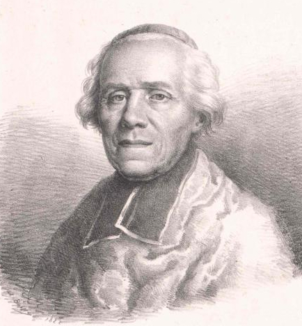
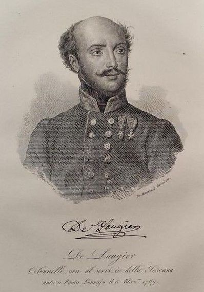
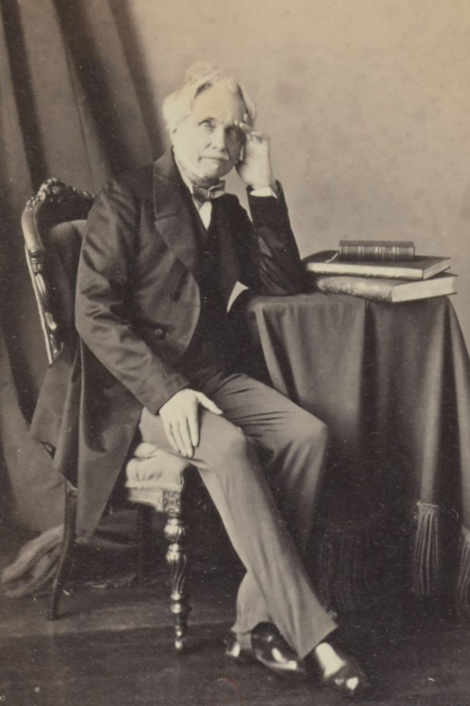
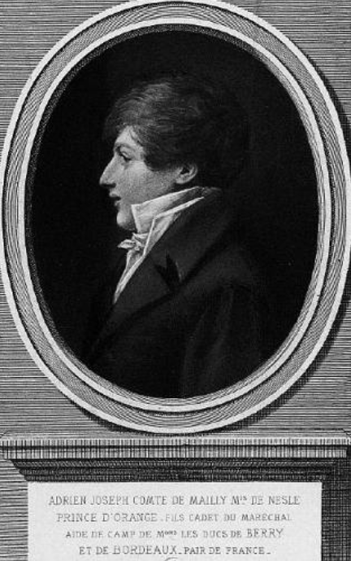

모스크바를 떠나며 - 병사들의 환호
게시: 2021-05-03T06:30:05+09:00
타루티노 전투 소식을 들은 나폴레옹은 전혀 놀라지 않았습니다. 그러나 이상할 정도로 흥분했습니다. 그는 수여 중이던 레종 도뇌르 훈장들을 거의 뿌리다시피 서둘러 나눠주고는 아직 세부 계획이 진행 중이던 그 다음날 군부대들의 모스크바 철수를 서둘러 지시했습니다. 그는 이 과정 중에 무척 조바심을 내며 안절부절했는데, 최근 뭔가 서류를 들고 마침 이 자리에 있었던 보세 추기경 (Louis-François de Bausset)은 그 모습에 대해 훗날 회고록에서 '여태까지 외면해오던 모든 진실을 한꺼번에 직면한 사람의 모습'이라고 평했습니다.

(보세 추기경입니다. 추기경이 뭔 이유로 최전선 모스크바까지 왔었을까 궁금하신가요? 보로디노 전투 직전 나폴레옹이 그의 아들 로마왕의 초상화를 배달받고 무척 기뻐했다는 이야기를 해드렸는데, 그 초상화를 파리에서 들고온 사람이 바로 이 보세 추기경이었습니다. 그는 종교인이자 문필가로서 프랑스 한림원의 멤버이기도 했습니다.) 결국 당장 그날 저녁 첫 부대가 모스크바 성문을 나섰고, 나폴레옹과 그의 궁정 식구들도 곧 모스크바를 떠났습니다. 그러나 서둘러 떠나다보니 준비 상태는 과히 완벽하다고 할 수가 없었습니다. 일단 나폴레옹이 철수 계획을 감추기 위해 폐기처분을 금지했던 각종 중화기 및 군수품도 서둘러 파괴해야 했습니다. 라리봐지에르 장군은 탄약 수송차(caisson) 500량과 수십만 발의 화약, 그리고 6만정의 머스켓 소총에 불을 질렀습니다. 너무 작아서 별 쓸모가 없던 4-파운드 야포들도 파괴하는 것이 좋겠다고 라리봐지에르 장군이 의견을 냈으나, 나폴레옹은 '그러면 패배한 뒤에 후퇴하는 것처럼 보인다' 라며 불허했습니다. 하지만 정작 떠나는 병사들은 그야말로 기뻐하는 분위기였습니다. 갑자기 짐을 싸라는 명령을 받은 병사들은 처음에는 약간 어리둥절했지만 곧 그리운 고향 생각에 환호했습니다. 모스크바라는 대도시에 도착했을 때는 처음 보는 풍경에 신기하기도 했고 온갖 재물을 약탈하면서 신이 나기도 했지만 1달 조금 넘게 같은 장소에서 빈둥거리다보니 이제 모스크바가 지겨워지기도 했고, 무엇보다 그동안 약탈한 물건을 보고 기뻐할 가족들의 얼굴이 떠올랐던 것입니다. 외젠의 이탈리아 군단 소속이었던 23세의 젊은 장교 로지에(Cesare De Laugier de Bellecour)는 다음과 같이 당시 분위기를 일기에 적었습니다. "우리는 서둘러 막사로 돌아가서 정복 유니폼을 접어 배낭에 넣고 기쁜 마음으로 행군용 군복을 꺼내 입었다. 모든 것이 혼란스러웠으나 모든 이들의 얼굴에서 기쁨이 넘쳐났다. 우리의 마음을 어둡게 했던 것은 걸을 수 없는 부상병 동료들을 놔두고 가야 한다는 것 뿐이었다. 그들 중 몇몇은 우리를 따라오겠다며 초인적인 노력을 하기도 했다. 오후 5시가 되자 북소리와 군악대의 연주 속에서 우리는 모스크바 밖으로 행군을 시작했다. 모스크바 ! 정말 오고 싶어했던 목적지였지만 이제 떠나면서 아쉬운 점이 전혀 없었다. 우리는 그저 우리 고향인 이탈리아와 이 영광스러운 원정 끝에 이제 곧 보게 될 가족 생각 뿐이었다."

(로지에가 나중에 백작이 된 이후의 초상화입니다. 그의 가문은 낭시(Nancy) 출신이었으나 그는 엘바섬 태생이라고 하는데, 그는 스스로를 이탈리아인이라고 여겼습니다. 러시아에서 살아돌아온 이후에는 Gli italiani in Russia (러시아에서의 이탈리인) 등 세 편의 회고록을 썼습니다. 그의 가장 큰 활약은 1848년 혁명 때였고, 그때 혁명을 진압하러 온 오스트라아군 라데츠키 장군과 쿠르타토네(Curtatone)에서 전투를 벌이기도 했습니다. 물론 결국 패배했습니다만, 1851년 사르디나아 왕국 국방부 장관이 된 로지에를 만난 라데츠키는 '자기는 그때 쿠루타토네에서 피에몬테의 대군과 싸우는 줄 알았는데 알고보니 그때 당신이 거느렸던 부대는 말도 안되는 소수 병력이었더라, 감탄했었다' 라고 칭찬을 했다고 합니다.) 프랑스군이 갑자기 모스크바를 떠난다는 소식은 당연히 일반 시민들에게도 엄청난 혼란을 불러왔습니다. 러시아인들의 보복을 두려워한 나머지, 전쟁 전부터 상인이나 가정교사 등으로서 모스크바에 거주하던 프랑스 민간인들 뿐만 아니라, 그동안 프랑스군에게 협력해왔던 러시아인들이나 폴란드인들도 프랑스군과 함께 모스크바를 떠나려 이들을 따라나섰습니다. 이 중에는 당연히 여성이나 아이들도 있었고, 심지어 폴란드 상인과 결혼한 영국 여자까지 있었습니다. 민간인들로 인한 혼란은 프랑스군을 따라 나서려는 사람들 때문만이 아니었습니다. 발 없는 말이 천리 간다더니, 모스크바 인근의 시골 농민들까지 우르르 몰려와 프랑스군 막사 근처에서 아우성이었습니다. 이들이 바라는 것은 다름아닌 거래였습니다. 모스크바 대화재 이후 장교들이나 병사들이나 노략질에 열을 올려 다들 뭔가 두둑히 챙겨둔 바 있었는데, 이제 머나먼 행군을 떠나는 마당에 들고갈 수가 없어서 두고 가야 하는 물건이 있을 수 밖에 없을 거라고 생각했던 것입니다. 러시아인들은 그런 물건을 헐값에 사들이길 원했고, 혹시 거래가 안되더라도 프랑스군이 두고가는 물건을 거저 집어올 수 있을 거라는 희망을 가지고 있었습니다. 그러나 이들은 병사들의 욕심을 과소평가하고 있었습니다. 병사들이 뒤에 두고 가는 것은 그다지 많지 않았고 그들은 자신들이 노략질한 재물을 다 가져가기 위해 군사 작전 자체가 엉망이 되는 것을 전혀 개의치 않았습니다. 가뜩이나 갑자기 출발 일정을 앞당기는 바람에 출발 준비는 완벽과는 거리가 멀었는데, 모두가 힘을 합해 철수 준비를 해야 할 마당에 대략 8천 이상의 병사들이 무단으로 부대를 떠나 자신의 노략품을 각자 알아서 구한 짐마차나 짐말에 실어 올렸습니다. 물론 이런 짐마차와 짐말 등은 모두 원래대로라면 식량과 탄약, 의약품과 부상병들을 실어날라야 할 것들이었습니다. 그렇다고 이들이 탈영을 한 것도 아니었습니다. 차라리 탈영을 했다면 철수에 더 도움이 되었을 것 같은데, 이들도 프랑스군과 함께 이동해야 자신들의 마차와 노새가 안전하게 프랑스까지 갈 수 있다는 것을 잘 알고 있었으므로 프랑스군 대열에 꾸역꾸역 모여들었습니다. 이런 짐마차와 짐말들은 가뜩이나 상태가 좋지 않은 도로 상에서 끔찍한 교통 체증을 야기하게 되어 있었습니다. 베르티에의 참모였던 페젠삭(Raymond Aimery de Montesquiou-Fezensac)은 자신의 연대와 함께 성문을 나서다가 다른 부대가 밀가루 포대와 사료 더미에 불을 지르고 있는 것을 보고 기겁했습니다. 그 부대는 그런 식량을 수송할 수단이 없었기 때문에 그렇게 소각처분하고 있었는데, 이는 물론 적지 않은 마차와 말이 병사들과 장교들의 사사로운 노략품을 싣는데 전용되었기 때문에 발생한 일이었습니다. 이떄 정작 페젠삭의 부대 짐마차들에는 빈 공간이 꽤 충분했습니다. 훗날 페젠삭은 조금만 더 잘 준비를 했으면 후퇴할 때 많은 병사들이 굶주림에 목숨을 잃지 않아도 되었을 것이라며 개탄했습니다.

(레이몽 페젠삭 공작의 노년의 모습입니다. 그는 Philippe de Montesquiou-Fézensac 장군의 아들이었으나 1804년 20세의 나이로 일반 병사로 입대했고, 온갖 계급을 거쳐 1805년에 소위로 진급했습니다. 네 장군의 참모 역할로 장교 생활을 시작한 그는 1809년에야 대위로 승진했는데, 역시 귀족 집안의 아들이라는 점이 작용했는지 나폴레옹은 별다른 큰 공로도 없는 그를 남작에 봉했습니다. 그는 러시아 원정에서는 베르티에의 참모로 활동했으나 철수할 때는 네 장군의 밑에서 복무했습니다. 이때 그는 극악한 환경 속에서도 대단한 용기를 발휘하여 네의 극찬을 받았고 그 공로로 패전에도 불구하고 대령으로 승진했습니다. 이후에도 함부르크 공략전 등에서 활약하며 장군이 되었으나 드레스덴 전투에서 포로가 되었습니다. 원래 귀족이라는 점 때문이었는지 부르봉 왕정 복고 이후에도 여러 요직을 맡으며 잘 살았습니다.) 이런 난장판 속에서도 사람들의 눈에 확연히 들어왔던 것은 병사들의 건강과 사기가 매우 좋았다는 점입니다. 이때 모스크바에 주둔하고 있던 그랑다르메는 약 9만5천 정도였는데, 이들은 모스크바까지의 온갖 고생을 이겨낸 강골 중의 강골이었습니다. 네만 강을 건너기 전 사열에서 나폴레옹이 걱정할 정도로 허약했던 어린 병사들이나 건강하지 못했던 병사들은 그동안의 여정에서 다 죽었거나 낙오했기 때문이었습니다. 게다가 먹을 것이 풍부했던 모스크바에서 한달간 잘 먹고 잘 쉰 덕분에 이들의 건강 상태는 매우 좋았습니다. 기병총 연대의 젊은 장교 드 메일리(Adrien-Augustin-Almaric, comte de Mailly)는 병사들이 모스크바로부터 행군해 나가는 길 내내 목청껏 노래하며 매우 즐거운 분위기였다고 회고록에 적었습니다. 베르크(Berg) 창기병 연대의 뒤몽소 대위(Francois Dumonceau)는 특히 외젠 휘하의 이탈리아 병사들이 웃고 노래하는 모습에 무척 깊은 인상을 받았습니다. 그들은 비록 출발할 때의 4만5천에서 대폭 줄어 2만 밖에 남지 않았지만 그 총지휘관인 외젠 본인도 부하들의 사기와 전투 준비 태세에 대해서는 무척이나 흡족하게 생각하고 있었습니다.

(드 메일리 백작의 초상입니다. 그는 정통파 후작 가문의 아들로서, 은근히 귀족들을 우대했던 나폴레옹 치하에서 우대를 받아 생-시르 사관학교(École militaire de Saint-Cyr)와 생-제르멩 사관학교(École militaire de Saint-Germain)를 나온 뒤 1811년 19세의 나이로 기병총 연대의 소위로 임관하여 곧장 러시아 원정에 참여했습니다. 그러니까 드 메일리에게는 러시아 원정이 첫번째 원정이었던 셈이니, 모든 것이 신기한 경험이었을 것입니다. 그는 귀족답게 부르봉 왕가의 복위를 열렬히 환영했고 나폴레옹의 백일천하 때도 동조하지 않고 얌전히 있었습니다.) 이렇게 병사들의 사기가 드높았다는 것이 이상하게 느껴질 수 있습니다. 아무리 그리운 고향으로 돌아가는 길이라고 해도, 분명히 후퇴하는 길인데 이렇게 병사들의 사기가 드높을 수 있을까요? 여기서 나폴레옹의 심리전이 꽤 효과가 좋았다는 것을 알 수 있습니다. 이들에게 내려전 명령은 후퇴가 아니라 겨울 숙영지로 이동하는 것이었습니다. 그리고 정말 이들이 나선 모스크바 성문은 스몰렌스크 대로, 즉 서문이 아니라 칼루가(Kaluga) 대로, 즉 남문이었습니다. 이들은 먼저 타루티노에 주둔한 쿠투조프의 러시아군을 들이친 뒤에 스몰렌스크로 이동할 예정이었습니다. 뿐만 아니라 이들은 모스크바를 버리는 것도 아니었습니다. 모스크바에는 여전히 모르티에 원수와 그의 병력이 주둔하고 있었습니다. 프랑스인이건 이탈리아인이건 병사들 중 아무도 자신들이 도망치고 있다는 생각은 하지 않았습니다.
하지만 이렇게 보무도 당당하게 모스크바를 나서는 그랑다르메의 모습에는 누가 봐도 이상한 부분이 있었습니다. 그리고 그로 인해 온갖 문제들이 드러나기 시작합니다. Source : 1812 Napoleon's Fatal March on Moscow by Adam Zamoyski
fr.wikipedia.org/wiki/Raymond_Aimery_de_Montesquiou-Fezensac
en.wikipedia.org/wiki/Louis-Fran%C3%A7ois_de_Bausset
it.wikipedia.org/wiki/Cesare_De_Laugier_de_Bellecour